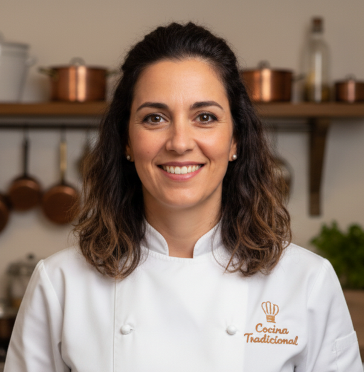
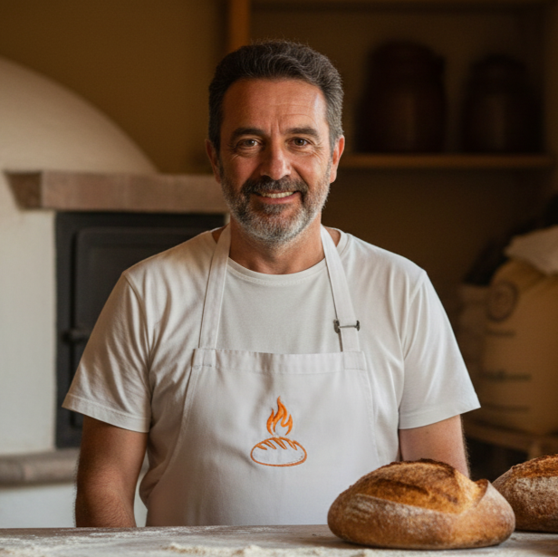
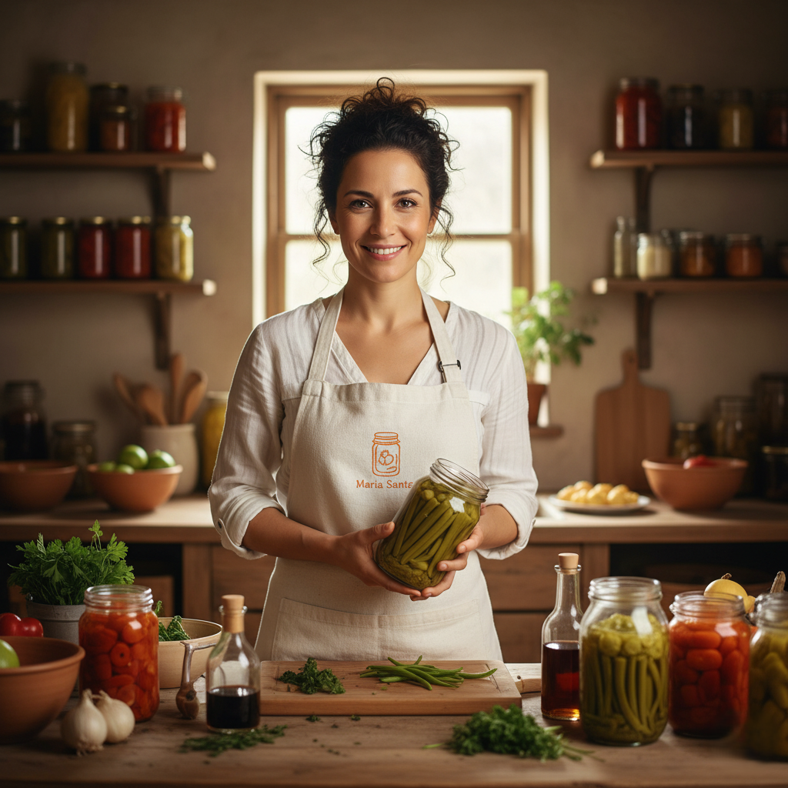
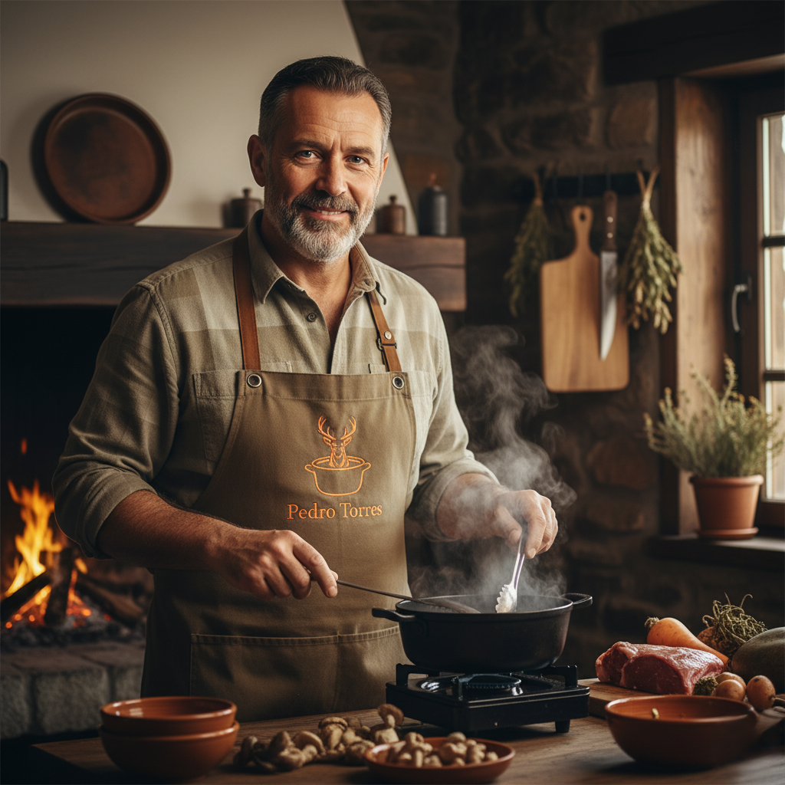

Participantes
Chefs, divulgadores y amantes de la cocina tradicional.
-

Ana García
Cocina de cuchara · Madrid
Reivindica los guisos lentos y el producto de temporada. Taller: “Caldo base y fondos”.
-

Jordi López
Horno de leña · Girona
Panes de masa madre y cocción tradicional. Demostración: “Coca de recapte”.
-

María Santos
Conservas y encurtidos · Cádiz
Técnicas caseras seguras para conservar. Charla: “Vinagres, salmueras y aceite”.
-

Pedro Torres
Caza y estacionales · Soria
Respeto por el producto y técnicas de antaño. Sesión: “Estofados de otoño”.